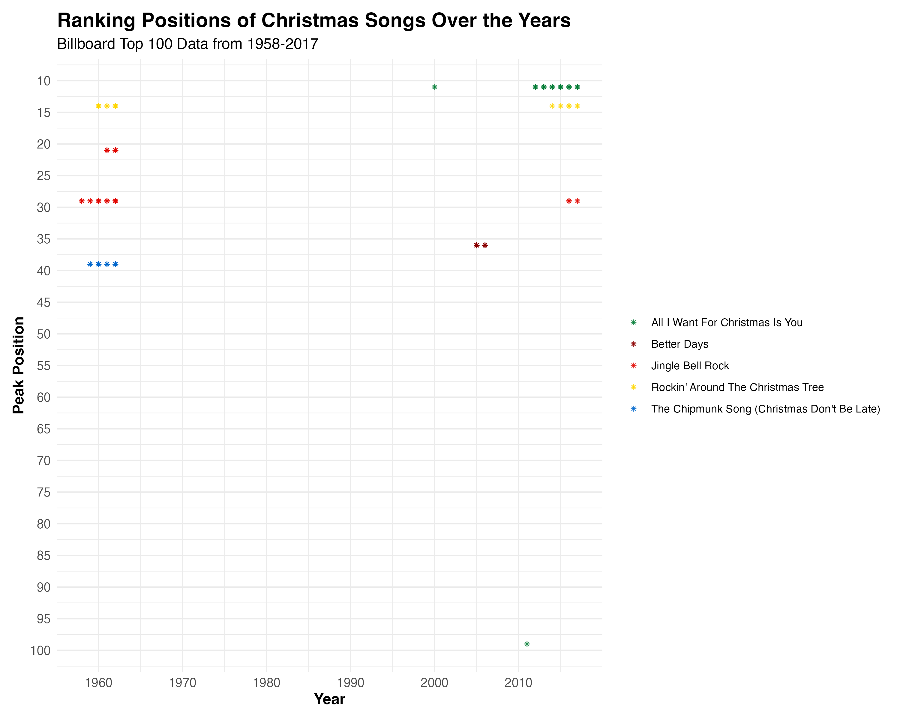
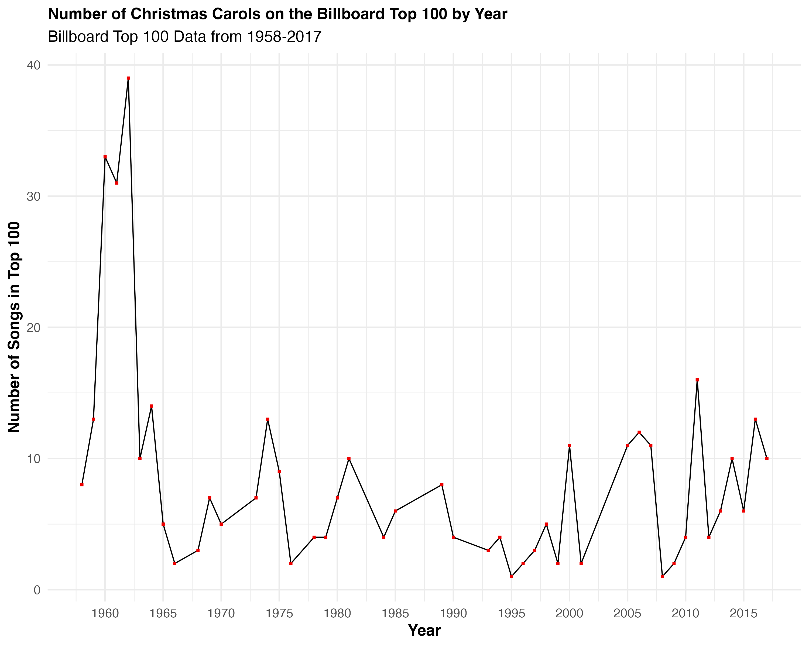

Welcome to my portfolio showcasing five graphs that analyze trends from the Christmas Billboard Top 100. Each visual represents unique insights drawn from the dataset. Click on the graphs to view them in detail.
Graph 1: Most Prominent Christmas Carol

Graph 2: Christmas Carol Ranking

Graph 3: Number of Christmas Carols in Billboard Top 100

Graph 4: Peak Positions Histogram

Graph 5: Consecutive Topping Christmas Carols